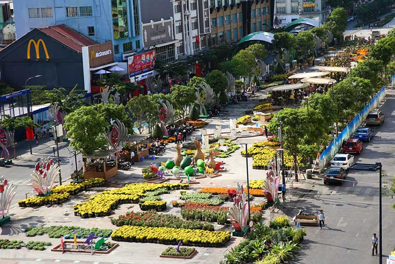
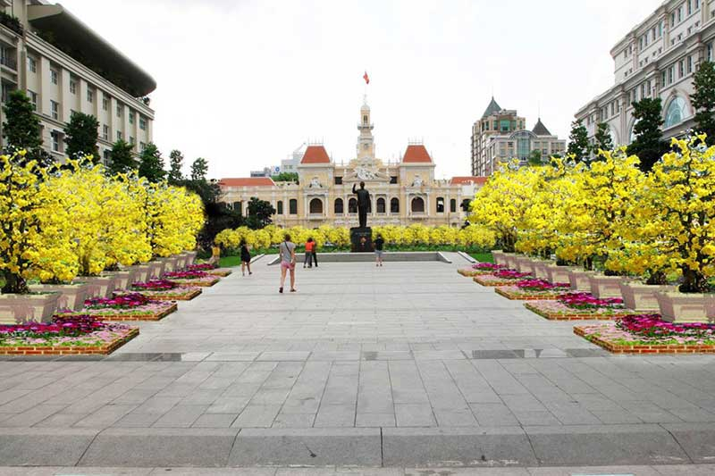
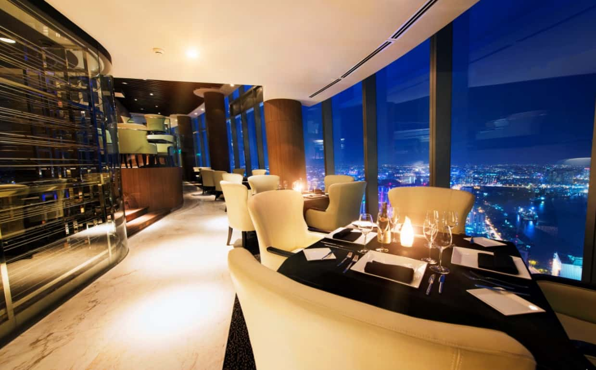
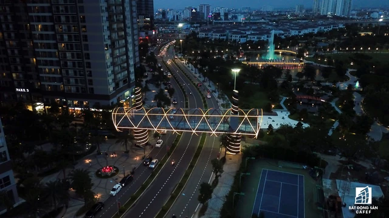

1.Phố đi bộ Nguyễn Huệ, điểm chơi đêm Sài Gòn hấp dẫn
Địa chỉ: Đường Nguyễn Huệ, Quận 1, Tp.HCM.
Phố đi bộ Nguyễn Huệ có chiều dài 670m, rộng 64m, với tổng kinh phí xây dựng gần 430 tỷ đồng gồm 2 phân đoạn: Công viên tượng đài Chủ tịch Hồ Chí Minh từ đường Lê Thánh Tôn (trước trụ sở UBND TP.HCM) đến đường Lê Lợi và quảng trường Nguyễn Huệ từ đường Lê Lợi đến Tôn Đức Thắng.

Đường Nguyễn Huệ từ lâu đã là con đường huyết mạch của trung tâm thành phố. Đặc biệt vào mỗi dịp Tết đến, nơi đây tổ chức triển lãm đường hoa được người dân thành phố rất quan tâm yêu thích, và giờ đây con đường ấy đã trở thành con đường đi bộ với nhiều hạng mục công trình, phục vụ nhu cầu tham quan, vui chơi của người dân không chỉ vào dịp xuân mà còn tất cả các ngày trong năm.


Quảng trường trước tượng đài Bác Hồ (đường Nguyễn Huệ, người dân quen gọi là phố đi bộ) được UBND TP HCM đưa vào sử dụng vào dịp 30/4/2015 sau 7 tháng thi công. Đây là quảng trường đẹp và hiện đại nhất Việt Nam với chiều dài 640m, rộng 64m, kéo dài từ UBND TP HCM đến bến Bạch Đằng.

Địa điểm này không chỉ thu hút du khách khi ghé thăm thành phố mà còn là nơi tụ tập của giới trẻ mỗi ngày. Thời điểm phố đi bộ Nguyễn Huệ đông đúc nhất có lẽ là khi nắng tắt, thời tiết trở nên mát mẻ dễ chịu.
Phố đi bộ Nguyễn Huệ được đầu tư với nhiều hạng mục như đèn chiếu sáng, đài phun nước tạo cảnh quang, cây xanh... Ở đây mỗi dịp cuối tuần sẽ rất đông đúc với nhiều hoạt động giải trí, các nhóm du ca biểu diễn... không khí rất cởi mở vui tươi.


2.Tòa tháp Bitexco, ngắm Sài Gòn về đêm từ trên cao
Địa chỉ: 19-25 Nguyễn Huệ, P. Bến Nghé, Quận 1, Tp. HCM.

Sau khi Landmark 81 khánh thành, tòa nhà Bitexco giữ vị trí thứ 2 trong bảng xếp hạng tòa nhà cao nhất Sài Gòn. Chiều cao tòa Bitexco là 262m với 3 tầng hầm và 68 tầng lầu được thiết kế bằng thép và kính đôi gia nhiệt, có hàm lượng sắt thấp. Đặc biệt có tầng 49 là đài quan sát Sài Gòn Skydeck và bãi đỗ trực thăng với chiều dài 40m, ở tầng thứ 52 của tòa tháp.

Được lấy cảm hứng từ hình ảnh búp sen – biểu tượng của người Việt Nam, kiến trúc sư Carlos Zapata lẫn tập đoàn Bitexco muốn gửi gắm thông điệp “ Văn hóa Việt Nam đang nở rộ và Việt Nam đang vươn cao trong quá trình Hội nhập”. Hình ảnh của búp sen vươn lên bầu trời, thể hiện cho khát vọng vươn lên của dân tộc, đại diện cho một Việt Nam đầy năng động nhưng vẫn gìn giữ bản sắc.

Bitexco trở thành biểu tượng cho sự phát triển nhanh chóng của Việt Nam hiện đại, hội nhập quốc tế và thế hệ trẻ năng động. Tác phẩm nghệ thuật kiến trúc duyên dáng này là điển hình chúng cho sự hợp lực hợp tác quốc tế.
Có thể nói, truyền thống văn hóa của người Việt đều được kiến trúc gia người Mỹ miêu tả một cách khéo léo nhất, tuyệt đẹp nhất, khiến cho bất cứ du khách quốc tế nào khi nhìn cũng nhận ra đó là hình ảnh đại diện của Việt Nam.
Đặc biệt nếu muốn nhìn trọn Sài Gòn một cách bao quát nhất để cảm nhận được sự nhộn nhịp và náo nhiệt nhịp sống nơi đây thì không nên bỏ qua tòa nhà Bitexco, ngắm nhìn toàn cảnh thành phố Hồ Chí Minh không góc chết từ giữa khu vực trung tâm từ trên cao với ống nhòm tầm xa.
Đài quan sát Sài Gòn Skydeck - Tòa nhà Bitexco
Thiết kế theo phong cách bất đối xứng sử dụng 6000 tấm kính, tất cả đều được đo đạc kỹ lưỡng làm sao cho hình dáng của tòa nhà thanh mảnh nhất, ngắm Sài Gòn sắc nét nhất.
Thiết kế tấm kính độc đáo - tòa nhà Bitexco
Những điều cần biết khi trải nghiệm tham quan Bitexco
1. Giá vé và giờ mở cửa tòa nhà
Giá vé lên tầng 49 để tham quan và nhìn Sài Gòn rộng lớn: 200.000VND/1 người/1 lượt
Giờ mở cửa: 10:00 – 21:30 (cuối tuần đóng cửa muộn hơn)
2. Cách thức di chuyển vào tòa nhà:
Bitexco được trang bị hệ thống thang máy 2 tầng, do hãng Otis của Mỹ sản xuất, lắp đặt và bảo trì. Có tổng cộng 12 thang máy 2 tầng bên trong tòa nhà, di chuyển với tốc độ 7m/giây, tương đương du khách chỉ mất 45 giây để di chuyển đến bất cứ nơi nào trong tòa nhà.

3.Ngắm Sài Gòn về đêm từ tòa nhà Landmark 81
Tòa nhà cao nhất Việt Nam lung linh về đêm giữa Sài Gòn xa hoa
Địa chỉ: số 208 Nguyễn Hữu Cảnh, phường 22, quận Bình Thạnh, thành phố Hồ Chí Minh.
Giờ mở cửa: ngày trong tuần 07:00 - 20:00; ngày cuối tuần 07:00 - 21:00
Được bố trí trong 6 tầng từ B1 tới tầng 5 của tòa tháp Landmark 81 có chiều cao kỷ lục 461,3m, thuộc top những tòa nhà cao nhất thế giới, Vincom Center Landmark 81 có quy mô rộng gần 50.000m2. Đây là TTTM được thiết kế cao cấp bậc nhất với ứng dụng hệ thống đèn trần LED có thể trình diễn hiệu ứng chuyển động ánh sáng độc đáo lần đầu tiên xuất hiện tại Việt Nam.


Landmark 81 là 1 trong 10 tòa nhà cao nhất thế giới và được xem là biểu tượng của sự sang trọng, hiện đại. Tòa nhà cao tầng này được xây dựng trong khuôn viên
rộng lớn tại quận Bình Thạnh, TPHCM. Về đêm, tòa tháp lung linh, tráng lệ giữa thành phố với hệ thống đèn led đa sắc liên tục đổi màu khiến nhiều người thích thú.
Đặc biệt hơn, bên trong Landmark 81 là hệ thống khách sạn, hồ bơi sang trọng, các câu lạc bộ thượng lưu và cả những quán bar cao cấp - điểm đến lý tưởng để khám
phá Sài Gòn về đêm. Nổi bật nhất trong số đó phải kể đến Blue Pearl Bar.
Blue Pearl Bar nằm trên tầng 47 tòa Landmark 81 nổi bật với phong cách sang trọng, cuốn hút như viên ngọc South Sea xinh đẹp.
Quầy bar được thiết kế gần hồ bơi, phục vụ các loại mocktails, cocktail độc đáo, mang đậm dấu ấn của Vinpearl Landmark 81, Autograph Collect

4.Cầu Ánh Sao Sài Gòn, địa điểm giải trí về đêm đầy màu sắc
Nhắc đến biểu tượng của Thành phố Hồ Chí Minh, chắc chắn không thể không nhắc tới cầu Ánh Sao Sài Gòn. Đây không chỉ là nơi tản bộ, ngắm cảnh mà còn là chốn hẹn hò lãng mạn của các bạn trẻ. Cầu Ánh Sao được xây dựng năm 2009 với chiều dài 170m, rộng 8,3m với thiết kế ấn tượng. Khu Kênh Đào với quảng trường thiết kế mô phỏng hình mặt trăng, khu Hồ Bán Nguyệt mô phỏng hình mặt trời. Hai bên thành cầu được lắp đặt hệ thống đèn led bảy màu.

Sở dĩ có tên gọi là “Cầu Ánh Sao” bởi thiết kế cây cầu sử dụng hệ thống đèn led chiếu sáng nhiều màu, tạo nên khung cảnh rực rỡ như bầu trời đầy sao. Trông từ xa, cầu Ánh Sao trở nên nổi bật bởi những tia sáng lấp lánh như bảy sắc cầu vồng, đẹp đẽ, nên thơ. Nơi đây không chỉ tạo nên nét đẹp rất riêng cho Sài thành mà còn là chứng nhân cho những câu chuyện tình yêu đôi lứa.
.jpeg)
Bằng vẻ đẹp rực rỡ của mình, năm 2013, cầu Ánh Sao ở Sài Gòn đã nhận được Huân chương Arthur G.Hayden của Hội Nghị Cầu Đường Quốc tế (IBC). Đồng thời, cũng trong năm này, cầu Ánh Sao lọt top 100 điều thú vị của thành phố do Sở Văn hóa - Thể thao Du lịch Thành phố Hồ Chí Minh bình chọn.